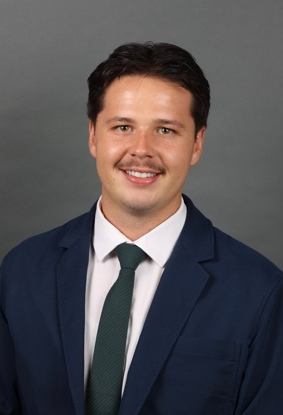
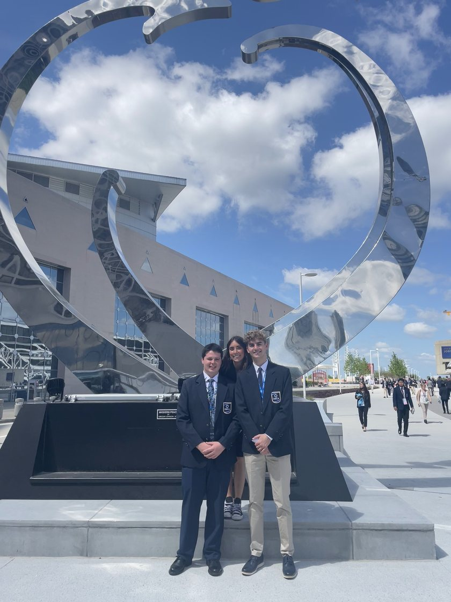
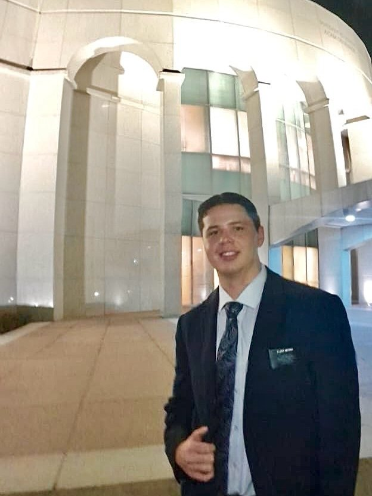

My Story
I'm a junior in Information Systems at BYU's Marriott School of Business, with an emphasis in systems consulting. I like the space between a business problem and the system that solves it: sitting down with the people who do the work, figuring out what they need, and then building it.
I grew up in Riverton, Utah. Here's how I got from selling candy at recess to building integrations for BYU's Workday system.
- Workday Developer at BYU
- Information Systems, graduating Dec 2027
- Speaks Portuguese
- Married to McKinna

How I Got Here
-
Growing up · Riverton, Utah
Playing up
As a kid I was always moving: basketball in the winter and summer, football in the fall, and soccer in the spring until spring football won me over. My brother and I are close, so during football season I played up with the older boys. I was smaller than almost everyone on the field, so I had to level up my game and work harder just to keep up.
I started my first business in elementary school. I found I could buy the good candy in bulk from a liquidator and sell it to my classmates. I was in the Chinese immersion program, so I had the same classmates every year, which gave me loyal customers. I made good money and built up a respectable inventory, until the business got big enough that the principal had to step in.
What it taught me: Playing up with people bigger than you is the fastest way to get better.
-
2021 – 2022 · Senior year, CTEC Business
Choosing the harder year
During my junior year I met McKinna, who's now my wife. I also knew most of my friends would graduate and move away the next year. So instead of a relaxed senior year, I decided to do something I loved. I enrolled in CTEC's business program, taking finance, business management, economics and marketing, and joined DECA with my classmates.

DECA Nationals in Atlanta DECA wasn't in my plan, but it came with a real opportunity: a business case for a real company, Whitaker Construction, a utilities and earthwork contractor in Brigham City. I built a solution to their problem and presented it to them and at competition. It won at Districts and Regionals and took me to Nationals in Atlanta.
What it taught me: The best opportunities usually aren't in the plan. Say yes anyway.
-
2022 – 2024 · Recife, Brazil
Learning to be counted on

Serving in Brazil After graduating in 2022, I served a two-year mission for The Church of Jesus Christ of Latter-day Saints in Recife, Brazil. I lived among the people and learned Portuguese from them. I worked harder than I'd imagined I could, made some of the best friends of my life, and fell in love with chocolate-stuffed-crust pizza. (It sounds gross. It isn't.)
As finance secretary, I managed the mission's budget of more than R$3.5M a year. That covered the missionaries' cards, the mission president's and office expenses, and the reports on all of it. I also reworked unclear contracts with landlords so both sides knew exactly where they stood.
What the job taught me: Being trusted with other people's money means being someone they can count on, every time.
One man stuck with me. He wasn't looking for religion, but he was lonely, so I invited him to church. He said no. He did take a Book of Mormon, but when we came back, he had written “ESTE LIVRO É FALSO” (“this book is fake”) on it in permanent marker. I told him his feelings made sense, read a passage with him, and invited him to read and pray about it once more. The next time we visited, he had torn out the page he'd written on, and he was embarrassed about it.
What he taught me: Approach change with charity and understanding. If I were in his shoes, I'd probably feel the same way.
-
2025 · Lease End
Only the next sale
I'd worked in fast food since I was 15, and I was ready for something that would challenge me and teach me a lot. Lease End, which helps drivers buy out their car leases, was still fairly small and building its phone sales team, so I applied. I was surrounded by mentors and people who pushed me to do well. In my first 45 days I brought in $48,000 in revenue.
The reason was simple: I only worked on things that helped me get the next sale. Everything else could wait.
What it taught me: Focus on the work that delivers the most value.
-
2025 – 2026 · BYU Tech Transfer Office
From backlog to license
I wanted to move into information systems and work closer to technology, and a friend thought the Tech Transfer Office would be a good fit. I interviewed, got the job, and was trusted with far more than I expected. I managed a portfolio of 55+ university technologies, worked with researchers, entrepreneurs and industry partners, and built full-stack web apps.
CloseChase started as an idea sitting in our product backlog. It wasn't mine originally, but I thought it could be really useful for small firms, and maybe bigger ones too, so I built it. Through the tech transfer network I met TeamOzy, a technology company out of Africa. I demoed the product and we talked through what it could become. We built onto it together and licensed it, and TeamOzy has run it ever since. It's live in beta today.
What it taught me: Listen to the people you're building for, then turn their vision into something that's uniquely theirs and useful.
-
2026 – now · BYU Office of Information Technology
My first big project
Today I'm a Workday Developer on OIT's data team. Our team works across every part of Workday, both HR and finance: reporting, integrations, data loads, exports and automations.
I started by rebuilding a buggy Workday Orchestration to be simpler and faster, with stronger error handling, and building reports for stakeholders. My first big project is connecting Workday to new software that BYU's facilities department is adopting. I'm building the critical integrations for their new system: time extracts and time reconciliation, purchasing and general ledger reconciliation, expense report and purchase order details, and invoice payments. The rest come next.
I'm the newest member of the team, but I've been recognized more often than anyone since I joined, for diving in, working hard and learning fast. I think that's because I've worked hard to be a good teammate to them first.
What it's teaching me: Good leadership starts with being the teammate you'd want to have, even when you're the newest one on the team.
-
What's next
Still playing up
I graduate with my BS in Information Systems in December 2027, and I'm planning to continue into BYU's Master of Information Systems Management (MISM) program. Along the way, I'm looking for internships and opportunities where I can keep growing, keep learning, and take on more than people expect.
Skills
Enterprise systems: Workday, Workday Orchestration, API integrations, business process automation, reporting
Development: Python, JavaScript, Next.js, HTML/CSS, SQL, Git, Supabase
Data and analytics: Tableau, advanced Excel, VBA, Claude AI
Consulting: Stakeholder management, process improvement, project management
My Strengths
CliftonStrengths Top 5: Competition · Achiever · Relator · Deliberative · Arranger
Competition and Achiever: I set a high bar and outwork it, like generating $48,000 in revenue in my first 45 days at Lease End.
Relator: I build lasting working relationships, like the ones with researchers and industry partners behind 55+ technologies at the Tech Transfer Office.
Deliberative: I check the details before I act, which mattered when auditing a R$3.5M annual budget in Brazil.
Arranger: I fit people and systems together, turning what Finance and HR need into Workday automations.
Education
Bachelor of Science, Information Systems (Dec 2027)
Brigham Young University, Marriott School of Business · Systems Consulting emphasis
Certifications
Professional Scrum Master I (PSM I) · Scrum.org · Oct 2026 · Verify
EY Technology Risk Virtual Job Simulation · Forage · Oct 2026
Recognition
DECA National Finalist · Advanced STEM Diploma
My Work
-
Workday Developer
BYU Office of Information Technology · Sep 2026 to present
Work with Finance and HR stakeholders to turn business needs into technical solutions, and automate their workflows with Workday Orchestrations.
-
Technology Commercialization Analyst
BYU Tech Transfer Office · Sep 2025 to Sep 2026
Managed a portfolio of 55+ university technologies, coordinating with researchers, entrepreneurs, and industry partners. Developed and deployed full-stack web applications, including CloseChase, which I helped license to TeamOzy.
-
Financial Advisor
Lease End · May 2025 to Sep 2025
Generated $48,000 in revenue in my first 45 days by consulting customers through their lease buyouts.
-
Finance Secretary and Volunteer Representative
The Church of Jesus Christ of Latter-day Saints, Recife, Brazil · Jul 2022 to Jul 2024
Oversaw an annual budget of more than R$3.5M and managed financial operations in Oracle for 200+ representatives, covering auditing, resource allocation, and budget administration.
Want to work together?
I'm looking for internships and roles where I can keep learning and take on real responsibility. If you think I'd be a good fit for your team, let's talk.